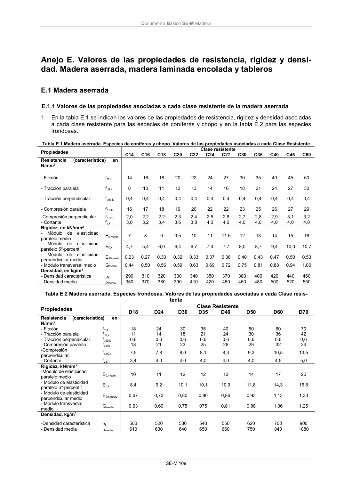

DB-SE-M Madera · edición 2019-12-20 · capa oficial
Documento DB-SE-M-oficial · SHA-256 del PDF 26b5819839ebfda78b0b119c5e76a0a37773b0d763c05688541870075df93718
Copia fiel del PDF fuente · Fuente oficial
Ficha de la disposición en la fuente oficial
Formatos: JSON del segmento · Markdown
D.4 Correspondencia entre clases resistentes de madera laminada encolada y madera aserrada madera aserrada 1 En la tabla D.2 se indican algunas correspondencias conocidas entre las clases resistentes de la madera laminada encolada y las clases resistentes de la madera aserrada con las que se fabrican las láminas. Tabla D.2 Correspondencias conocidas entre Clases Resistentes de madera laminada encolada y de madera aserrada Clases resistentes Madera laminada encolada homogénea GL24h GL28h GL32h - Todas las láminas C24 C30 C40 Madera laminada encolada combinada GL24c GL28c GL32c - Láminas externas (1) C24 C30 C40 - Láminas internas C18 C24 C30 (1) Los requisitos se aplican al sexto del canto extremo de cada lado con un mínimo de 2 láminas. DocumentoBásico SE-M Madera SE-M 109
